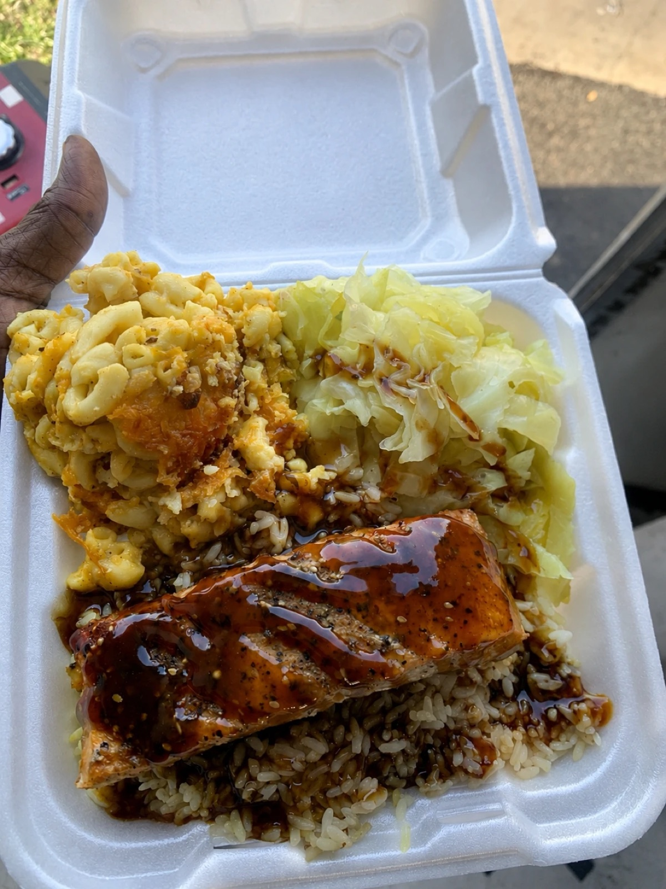

Best for Matthews
Private parties, neighborhood gatherings, church events, office lunches, birthdays, and graduations.
Island Boy Kreationz brings Virgin Islands–style oxtails, wings, bowls, and soul food sides to Matthews — downtown Matthews festivals to quiet cul-de-sac cookouts. Food truck on site or catering trays dropped where you need them.
Private parties, neighborhood gatherings, church events, office lunches, birthdays, and graduations.
Oxtails, wings, chopped chicken, curry chicken, shrimp and salmon bowls, rice and peas, yellow rice, cabbage, candied yams, mac and cheese, cornbread, cakes, and drinks.
Send the Matthews event date, address, guest count, service window, budget direction, and whether you want truck service, trays, or both.
The plates Matthews guests line up for — cooked the same way they come off the truck in Charlotte.
 Curry chicken meals
Curry chicken meals
Salmon plates Oxtails & rice and peas
Oxtails & rice and peasDate, address, guest count, service window, and menu direction — through the form, or by call or text at 980-785-8372.
Event fit, travel, timing, and menu get checked before anything is quoted — no surprises on either side.
Once the window is confirmed, the truck rolls or the trays land — hot, on time, and portioned for your crowd.
Travel note: Matthews is home turf — the truck is based in Charlotte, so metro dates are the easiest to fit. Send your date early and the team can confirm fast.
Send the date, guest count, and menu direction — the team reviews fit, travel, and timing before quoting.